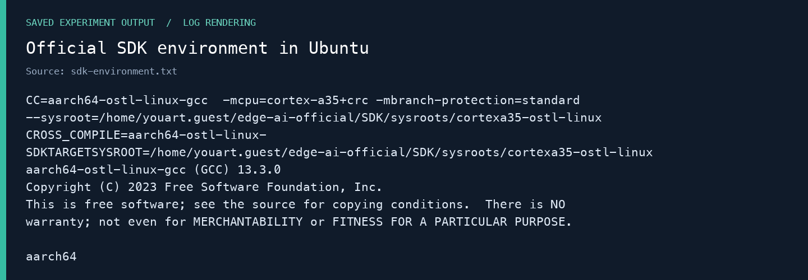
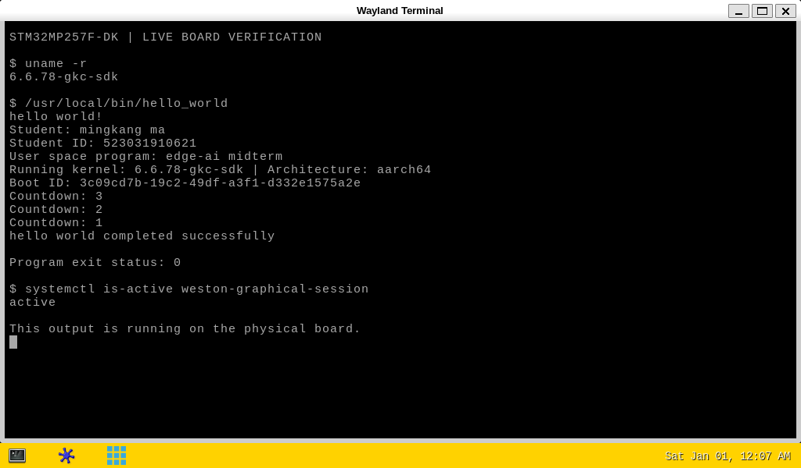
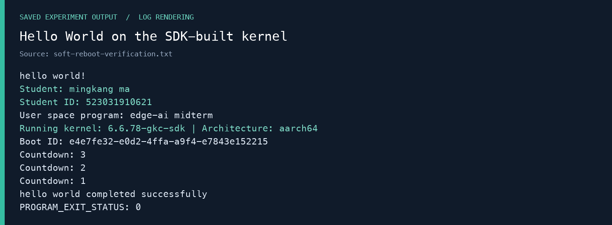
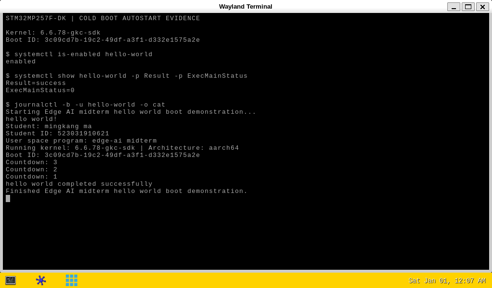
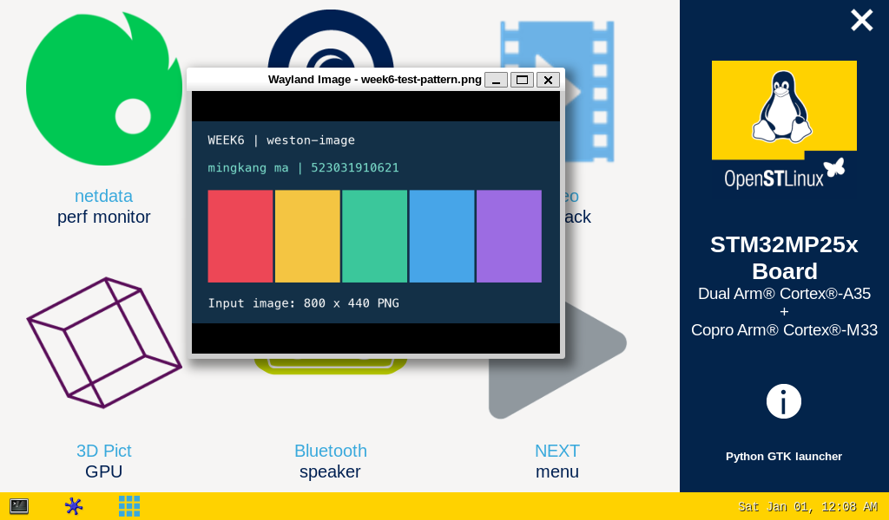
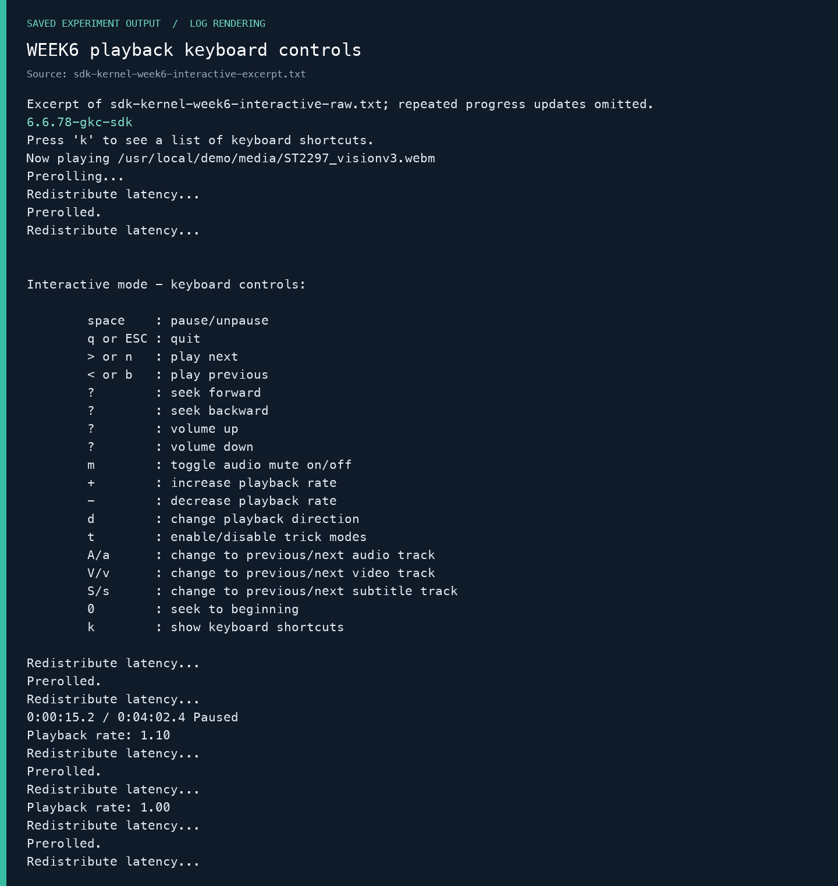
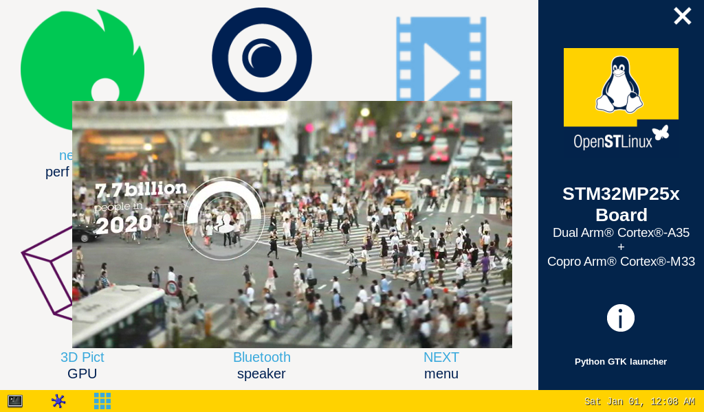

STM32MP257F-DK 实验全流程：OpenSTLinux SDK 方法
mingkang ma · 523031910621
构建主机：macOS + Ubuntu 24.04 ARM64；同时提供 Windows + Ubuntu x86_64 的复现步骤。
这份手册面向手动操作。每段命令标注执行位置；Linux 与板卡步骤共用，仅在宿主系统不同的地方分开说明。源码、Makefile、部署程序和真实输出随手册提供。Windows 步骤根据官方说明编写，尚未在组员 Windows 电脑上完整实测。
1. 实验目标、版本与验收
本次按 WEEK7 的 SDK 初始化、源码准备、ST 配置片段、内核与模块编译、网络部署、用户程序交叉编译流程实施。WEEK6 补充终端、传输、图像、GPU 和视频控制。WEEK8 激光雷达因暂无设备不实施。
本版验收：官方 SDK 构建的内核、Makefile 与 Hello World、真实断电上电后的自动运行，三项均已通过。 用户完成物理断电再上电后，先读取本次启动日志，确认服务在开机约 11.42 秒自动执行。
| 检查项 | 必须看到的结果 |
|---|---|
| 自己配置与编译的 Linux 内核 | 板上 uname -r 为 6.6.78-gkc-sdk，/proc/version 含 SDK GCC 13.3.0；运行配置与构建配置一致 |
| Hello World 和 Makefile | 实际编译命令使用 aarch64-ostl-linux-gcc 和 SDK sysroot；ELF 为 AArch64；在板上输出姓名学号、退出 0 |
| 上电自动运行 | 实际断电再上电后，当前 Boot ID 的服务日志已有完整输出，服务成功且退出 0；不能以手动启动服务代替 |
旧的 6.6.78-gkc-midterm 是 Ubuntu GNU 工具链的历史结果，保留作回退。验收 SDK 流程时，应展示本版 6.6.78-gkc-sdk 的证据。
课件页码在本文均指 PDF 的物理页码，不是页内印刷编号：WEEK7 第 38–44 页是内核步骤，第 66 页起为用户程序；第 41 页明确允许从 ST 官方 GitHub 获取源码。
2. 板卡、屏幕和接线
| 项目 | 实际确认 |
|---|---|
| 开发板 | STM32MP257F-DK，MB1605；STM32MP257FAK3 |
| CPU | 双 Cortex-A35 + Cortex-M33；运行 Linux 的架构为 AArch64 |
| 系统 | OpenSTLinux Weston v25.06.11，Yocto Scarthgap，版本字符串 5.0.8-openstlinux-6.6-yocto-scarthgap-mpu-v25.06.11 |
| 对应 Developer Package | STM32MP2Dev 6.1.0；原厂内核 6.6.78 |
| 屏幕 | HDMI，实测 1024×600；完整产品型号尚待屏幕背面标签确认 |
| 触摸 | WaveShare WS170120，USB VID:PID 0eef:0005，用户已确认触摸正常 |
课件中存在 Cortex-A7/M4、LVDS 和其他版本示例；它们不能直接覆盖这块实物的确认结果。USB 名称 WS170120 也不等于完整屏幕型号。
| 接线 | 作用 |
|---|---|
| CN21 Power/ST-LINK → 宿主电脑或合适的供电设备 | 供电；连电脑时还提供串口 |
| CN15 USB OTG → 宿主电脑，使用数据线 | USB 网络；主机 192.168.7.80，板卡 192.168.7.1 |
| CN1 HDMI → 屏幕 | 视频 |
| 屏幕 USB 触摸线 → 板卡 USB-A 主机接口 | 触摸；屏幕供电按该屏幕标签接好 |
本次不使用 CN2 LVDS。屏幕仅接 HDMI 通常不足以同时满足供电与触摸需求；不要将触摸线插到仅供电的端口。
3. 三个执行位置
| 标签 | 打开的终端 | 如何区分 |
|---|---|---|
| 宿主—macOS | Mac“终端” | uname -s 是 Darwin |
| 宿主—Windows | PowerShell | 用于串口、SSH、SCP、宿主文件 |
| Linux VM | Ubuntu 虚拟机中的终端 | SDK、源码和编译都在这里；内核名通常含 generic |
| 板卡 | SSH 或 ST-LINK 串口登录 root 后 | 主机名类似 stm32mp2-…；验收内核应为 6.6.78-gkc-sdk |
两台 ARM64 机器能够运行同一个简单 ELF，并不说明程序已在板上通过。验收必须在板卡终端进行。
4. WEEK5：检查已有系统
本板已经由用户刷入 Starter 镜像，本次不重刷整张 SD 卡。新内核通过网络部署，保留原厂启动入口、旧内核与现有引导链。
板卡：
uname -a
cat /etc/os-release
cat /proc/device-tree/model
cat /proc/cmdline
df -h / /boot
确认 v25.06.11 / 6.6.78 基线，再选配套 SDK 6.1.0。课件文件名里的 v26.02.18 是另一套示例；若组员板上是新版，应让 Starter、SDK、BSP 三者配套，不能只替换其中一个版本。
空卡刷机仍按 WEEK5 的对应 FlashLayout 和 STM32CubeProgrammer 指导执行；当前已完成实验的卡无需重复。本文的部署程序只接受已核对的 6.6.78 基线，不能用于任意型号或发行版。
5. 创建 Ubuntu 构建环境：宿主差异
5.1 macOS：Apple 芯片 + Lima（本次实测）
把项目文件夹放到 ~/Desktop/gkc。本次工作目录已包含 tools/lima；分享资料包不捆绑虚拟机软件，新电脑先创建 tools/lima 目录，从 Lima 2.2.1 官方发布页 下载 Darwin ARM64 包并核对发布方校验值，解压到该目录，使 tools/lima/bin/limactl 存在。Intel Mac 应使用对应宿主架构和 x86_64 Ubuntu，不能照搬这里的 ARM64 参数。
宿主—macOS，仅新建虚拟机执行一次：
cd "$HOME/Desktop/gkc"
tools/lima/bin/limactl start --name=edge-ai \
--vm-type=vz --arch=aarch64 --cpus=6 --memory=6 --disk=60 \
--containerd=none --mount-only="$PWD:w" \
--tty=false template:ubuntu-24.04
已存在时启动并进入：
cd "$HOME/Desktop/gkc"
tools/lima/bin/limactl start edge-ai
tools/lima/bin/limactl shell edge-ai
Linux VM： 设置共享目录变量为实际 Mac 项目路径。本次如下；其他组员替换用户名。
export PROJECT=/Users/youart/Desktop/gkc
ls "$PROJECT/scripts"
uname -m
应看到 aarch64。源码、SDK 与编译输出放在虚拟机自己的 Linux 文件系统；共享目录只收发压缩包、脚本和成果。
5.2 Windows：Intel/AMD + Ubuntu 虚拟机（复现指南）
推荐安装 Ubuntu 24.04 LTS x86_64 虚拟机。ST 推荐近期 Ubuntu LTS，并给出 Windows 虚拟机方案；ST 主机要求。Windows 原生 PowerShell 不能执行 Linux SDK 安装器。
- 安装 VirtualBox 或已有的虚拟机软件；下载 Ubuntu 24.04 AMD64 镜像。
- 新建 Ubuntu 虚拟机，建议 4–6 核、6–8 GiB 内存、60 GiB 以上磁盘，使用 NAT 联网；在虚拟机磁盘中安装 Ubuntu。
- 以 VirtualBox 为例，安装与宿主版本配套的 Guest Additions。先在 Ubuntu 执行
sudo apt-get install build-essential dkms linux-headers-$(uname -r)，从虚拟机“设备”菜单插入增强功能光盘，运行其VBoxLinuxAdditions.run，重启。 - 将 Windows 项目放在
C:\gkc，在虚拟机共享文件夹设置中添加该目录，名称gkc，勾选自动挂载与固定分配。在 Ubuntu 将自己加入vboxsf组后注销再登录。
Linux VM：
sudo usermod -aG vboxsf "$USER"
# 注销 Ubuntu 登录会话并重新登录后：
export PROJECT=/media/sf_gkc
ls "$PROJECT/scripts"
uname -m
应看到 x86_64。共享文件夹的细节见 VirtualBox Guest Additions 官方说明。没有共享目录时，也可在 Ubuntu 内下载 SDK 和源码，最后通过自己配置的文件传输方式导出成果。
本方案中 Windows 直接连接板卡的 CN15 与串口，虚拟机只编译；无需让 Ubuntu 抢占这些 USB 设备。后面从共享目录把成品交给 Windows，再由 PowerShell SCP 到板卡。WSL2 可另作选择，但不作为本文已验证的主路径。
5.3 以下 Ubuntu 步骤两种宿主共用
Linux VM：
sudo apt-get update
sudo apt-get install -y \
build-essential bc bison flex libssl-dev libelf-dev libncurses-dev \
libyaml-dev u-boot-tools dwarves device-tree-compiler kmod \
gawk diffstat chrpath socat texinfo python3 python3-pip python3-pexpect \
git rsync cpio file wget curl xz-utils unzip minicom
mkdir -p "$HOME/edge-ai-official"/{downloads,src,build}
export LAB="$HOME/edge-ai-official"
不要把 SDK、Linux 源码与构建目录放进 Windows NTFS／Mac 默认不区分大小写的共享目录。安装宿主依赖与使用 SDK 是两件事；apt install gcc-aarch64-linux-gnu 不能代替 SDK。
6. 下载、安装并初始化官方 SDK
打开 STM32MP2 Developer Package，选择 6.1.0。
| Linux 构建主机 | 下载行 | 目标板 |
|---|---|---|
| Apple 芯片 Mac 的 ARM64 Ubuntu | MP2-DEV-Arm | AArch64 Cortex-A35 |
| 常见 Intel/AMD Windows 的 x86_64 Ubuntu | MP2-DEV-x86 | AArch64 Cortex-A35 |
两种包的差别是“编译器本身在哪种 Linux 主机运行”，不是把板卡改成 x86。阅读并接受自己同意的许可，经账号或邮件验证下载。邮件地址和一次性下载令牌不写进共享手册或脚本。
本次实际 ARM64 包为：
SDK-aarch64-stm32mp2-openstlinux-6.6-yocto-scarthgap-mpu-v25.06.11.tar.gz
把自己的包放入项目 downloads。Linux VM：
export LAB="$HOME/edge-ai-official"
# 先 ls 确认只有本次所选架构和版本的包；若浏览器加了 en. 前缀，按实际文件名修改。
ls "$PROJECT"/downloads/*SDK*stm32mp2*v25.06.11*.tar.gz
cp "$PROJECT"/downloads/*SDK*stm32mp2*v25.06.11*.tar.gz "$LAB/downloads/"
tar -xf "$LAB"/downloads/*SDK*stm32mp2*v25.06.11*.tar.gz -C "$LAB/downloads"
find "$LAB/downloads" -name '*toolchain*.sh'
确认安装器唯一，运行它。下面会安装到 $LAB/SDK；不需要 root：
INSTALLER=$(find "$LAB/downloads" -type f -name '*toolchain*.sh')
printf '%s\n' "$INSTALLER"
bash "$INSTALLER" -y -d "$LAB/SDK"
source "$LAB/SDK/environment-setup-cortexa35-ostl-linux"
printf 'CC=%s\nCROSS_COMPILE=%s\nSYSROOT=%s\n' \
"$CC" "$CROSS_COMPILE" "$SDKTARGETSYSROOT"
$CC --version
本次实际结果：
SDK has been successfully set up and is ready to be used.
CROSS_COMPILE=aarch64-ostl-linux-
aarch64-ostl-linux-gcc (GCC) 13.3.0
CC 还应包含 -mcpu=cortex-a35+crc 与 SDK 中 sysroots/cortexa35-ostl-linux 的 --sysroot 参数。环境只对当前 shell 生效；每次新开编译终端都重新 source。本包没有要求使用一个不存在的裸 environment-setup 文件，使用安装器实际提示的完整文件名。

上图由原始日志排版生成，不是终端截图。
原始记录：安装日志、环境与版本、下载包 SHA-256。
7. 按 WEEK7 准备源码
课件提供三种源码管理方法：官方 BSP 压缩包解压后打补丁、ST 官方 GitHub 已打补丁源码、社区内核加 ST 补丁。它们是可选路径，不能对已包含 ST 补丁的源码再次打同一补丁。
本次构建采用 WEEK7 第 41 页的 ST 官方 GitHub 路径，版本与板上 v25.06.11 匹配。官方 SDK 已实际安装并用于内核和用户程序编译，对应内核发行配方明确指定 6.6.78、ST r2。
老师提供的 FLASH 包可以使用：它用于 WEEK5 刷入现成系统，也可留作恢复。FLASH 中的成品内核不能替代 WEEK7 要求的源码编译。三类文件作用如下；本次 GitHub 源码路径已完整实施，不必再等待 SOURCES 包。
| 文件／来源 | 内容和用途 | 本次使用 |
|---|---|---|
| FLASH / Starter | 预编译系统、引导固件、文件系统与 FlashLayout，用于刷机 | 用户此前已刷机；新下载包可用于恢复 |
| SDK / MP2-DEV-Arm 或 MP2-DEV-x86 | Linux 主机上的交叉工具链与目标 sysroot | 已安装并实际编译 |
| SOURCES / MP2-DEV-SRC，或课件列出的 ST GitHub | 内核、补丁、配置及相关源码 | 使用配套 ST GitHub 标签／提交；SOURCES 邮件下载曾返回 403 |
7.1 本次路径：ST 官方源码标签／提交
Linux VM： 如果沿用项目内已经下载、核验的包，直接解压；从头复现则先运行这四条下载命令。
mkdir -p "$PROJECT/downloads"
cd "$PROJECT/downloads"
curl -fL https://api.github.com/repos/STMicroelectronics/linux/tarball/v6.6-stm32mp-r2 \
-o linux-v6.6-stm32mp-r2.tar.gz
curl -fL https://api.github.com/repos/STMicroelectronics/meta-st-stm32mp/tarball/openstlinux-6.6-yocto-scarthgap-mpu-v25.06.11 \
-o meta-st-stm32mp-v25.06.11.tar.gz
curl -fL https://api.github.com/repos/STMicroelectronics/dt-stm32mp/tarball/ea2e971efac93f4644ceede7b997081ed49780ad \
-o dt-stm32mp-v6-r2.tar.gz
curl -fL https://api.github.com/repos/STMicroelectronics/gcnano-binaries/tarball/7c181cacf89f918039e64934fdc33fe817a052cd \
-o gcnano-v6.4.21-r1.tar.gz
sha256sum *.tar.gz
下载的是官方 GitHub 源码快照，Git 历史管理可选。若需要 Git，课件对应命令为 git clone 后 checkout v6.6-stm32mp-r2。本文的构建不依赖 .git。
export LAB="$HOME/edge-ai-official"
mkdir -p "$LAB/src"/{linux,meta-st,external-dt,gcnano}
tar -xf "$PROJECT/downloads/linux-v6.6-stm32mp-r2.tar.gz" \
-C "$LAB/src/linux" --strip-components=1
tar -xf "$PROJECT/downloads/meta-st-stm32mp-v25.06.11.tar.gz" \
-C "$LAB/src/meta-st" --strip-components=1
tar -xf "$PROJECT/downloads/dt-stm32mp-v6-r2.tar.gz" \
-C "$LAB/src/external-dt" --strip-components=1
tar -xf "$PROJECT/downloads/gcnano-v6.4.21-r1.tar.gz" \
-C "$LAB/src/gcnano" --strip-components=1
上面只在空目录第一次执行。该版本外部设备树路径为 src/external-dt/stm32mp2/a35-td/linux；gcnano 模块源码在 src/gcnano/gcnano-driver-stm32mp。
7.2 若使用成功下载的官方 BSP 包
解压 SOURCES-stm32mp-openstlinux-6.6-yocto-scarthgap-mpu-v25.06.11.tar.gz，打开其中 linux-stm32mp-6.6.78-…/README.HOW_TO.txt.stm32mp2、external-dt 与 gcnano 的同名说明。按 README 解压原始内核并依次应用 series／*.patch，再应用 fragment*.config。这条路径不要再套用 7.1 的已打补丁源码。
第三份 PDF 展示了较新版的目录名和 stm32mp2-m33td，本板是 A35-TD；选择 stm32mp2 说明。内核实际用到外部设备树；本次不重新制作 TF-A、OP-TEE、U-Boot、DDR 固件或整套 Starter 镜像。
8. 配置与编译内核、模块和设备树
Linux VM，保持 SDK 已 source：
source "$LAB/SDK/environment-setup-cortexa35-ostl-linux"
export OUTPUT_BUILD_DIR="$LAB/build/kernel"
export EXTDT_DIR="$LAB/src/external-dt/stm32mp2/a35-td"
mkdir -p "$OUTPUT_BUILD_DIR"
cd "$LAB/src/linux"
make O="$OUTPUT_BUILD_DIR" defconfig
scripts/kconfig/merge_config.sh -m -r -O "$OUTPUT_BUILD_DIR" \
"$OUTPUT_BUILD_DIR/.config" \
arch/arm64/configs/fragment-01-defconfig-cleanup.config \
arch/arm64/configs/fragment-02-defconfig-addons.config \
"$LAB/src/meta-st/recipes-kernel/linux/linux-stm32mp/6.6/fragment-03-systemd.config" \
"$LAB/src/meta-st/recipes-kernel/linux/linux-stm32mp/6.6/fragment-04-modules.config"
scripts/config --file "$OUTPUT_BUILD_DIR/.config" \
--set-str LOCALVERSION '-gkc-sdk' --disable LOCALVERSION_AUTO
make O="$OUTPUT_BUILD_DIR" olddefconfig
make -j6 O="$OUTPUT_BUILD_DIR" Image.gz vmlinux modules dtbs \
KBUILD_EXTDTS="$EXTDT_DIR/linux"
make O="$OUTPUT_BUILD_DIR" INSTALL_MOD_PATH="$OUTPUT_BUILD_DIR/install_artifact" \
INSTALL_MOD_STRIP=1 modules_install
mkdir -p "$OUTPUT_BUILD_DIR/install_artifact/boot"
cp "$OUTPUT_BUILD_DIR/arch/arm64/boot/Image.gz" "$OUTPUT_BUILD_DIR/install_artifact/boot/"
find "$OUTPUT_BUILD_DIR/arch/arm64/boot/dts" -name 'stm32mp257f-dk*.dtb' \
-exec cp {} "$OUTPUT_BUILD_DIR/install_artifact/boot/" \;
cp "$OUTPUT_BUILD_DIR/.config" "$OUTPUT_BUILD_DIR/install_artifact/boot/config-gkc-sdk"
make -s O="$OUTPUT_BUILD_DIR" kernelrelease
预期最后一行为 6.6.78-gkc-sdk。本次重新编译的三份 STM32MP257F-DK 设备树与原厂对应文件逐字节相同，证明所选设备树基线配套；详见 设备树与配置对照。LOCALVERSION 是实际编译配置的一部分，可让老师核对自编译结果。内核是 ARM64，使用 Image.gz；不要照抄 32 位例子的 uImage。
这组命令也保存为 scripts/build-sdk-kernel.sh，可从 Ubuntu 执行：
bash "$PROJECT/scripts/build-sdk-kernel.sh" 2>&1 | tee "$LAB/kernel-sdk-build.log"
选择手动命令或脚本一种即可。脚本自己初始化 SDK，检查 aarch64-ostl-linux-，不会切换回 Ubuntu GNU 交叉编译器。
8.1 重编译 gcnano 图形模块
更换内核版本后，需要为它编译匹配的 galcore.ko，否则桌面可能因 GPU 模块版本不匹配失败。
source "$LAB/SDK/environment-setup-cortexa35-ostl-linux"
GPU_SRC="$LAB/src/gcnano/gcnano-driver-stm32mp"
make -j6 -C "$OUTPUT_BUILD_DIR" M="$GPU_SRC" AQROOT="$GPU_SRC" \
SOC_PLATFORM=st-mp2 DEBUG=0 modules
make -C "$OUTPUT_BUILD_DIR" M="$GPU_SRC" AQROOT="$GPU_SRC" \
SOC_PLATFORM=st-mp2 DEBUG=0 \
INSTALL_MOD_PATH="$OUTPUT_BUILD_DIR/install_artifact" INSTALL_MOD_STRIP=1 modules_install
对应脚本是 scripts/build-sdk-gpu.sh。所有模块必须与部署的内核同一次配置、同一版本；不能把旧 galcore.ko 改个目录名就当作新模块。
9. Hello World 源码与 Makefile
源码见 hello_world.c。其他组员复现时，先在该文件中改为自己的姓名和学号，再重新编译。程序输出 hello world!、姓名 mingkang ma、学号 523031910621、运行内核、架构、Boot ID 和三秒倒计时，成功退出 0。
随包 scripts/verify-board.sh 也默认检查本次姓名与学号；改名后，同时修改其中两处 Student:／Student ID: 检查字符串，再打包。仅修改身份文本不需要重新编译内核。
Linux VM：
source "$LAB/SDK/environment-setup-cortexa35-ostl-linux"
mkdir -p "$LAB/hello_world"
cp "$PROJECT/hello_world/hello_world.c" "$PROJECT/hello_world/Makefile" "$LAB/hello_world/"
cd "$LAB/hello_world"
make clean
make
file hello_world
$READELF -h hello_world
$READELF -p .comment hello_world
make install
本次构建日志显示：SDK GCC 13.3.0、-mcpu=cortex-a35+crc、配套 --sysroot，生成 ELF 64-bit … ARM aarch64。file 中 “for GNU/Linux 5.15.0” 是该 ELF 的最低 ABI 标记，不是说板卡正在运行 5.15 内核。
Makefile 接收 SDK 环境变量中的 CC、CFLAGS、LDFLAGS，不会把完整 CC 字符串加引号当成一个可执行文件名。recipe 的行首必须是 Tab。直接使用提供的文件最稳妥。
.DEFAULT_GOAL := all
ifeq ($(origin CC),default)
$(error Load the OpenSTLinux SDK environment before running make)
endif
CFLAGS ?= -O2 -g -Wall -Wextra -Werror
PROG := hello_world
OBJS := hello_world.o
DESTDIR ?= $(CURDIR)/install_artifact
PREFIX ?= /usr/local
.PHONY: all clean install
all: $(PROG)
$(PROG): $(OBJS)
$(CC) $(LDFLAGS) -o $@ $(OBJS) $(LDLIBS)
%.o: %.c
$(CC) $(CPPFLAGS) $(CFLAGS) -c $< -o $@
install: $(PROG)
install -d $(DESTDIR)$(PREFIX)/bin
install -m 0755 $(PROG) $(DESTDIR)$(PREFIX)/bin/$(PROG)
clean:
rm -f $(PROG) $(OBJS)
Makefile 在没有加载编译环境时会明确报错，防止不小心用宿主默认编译器生成错误结果。必须先 source SDK，并核对实际命令前缀为 aarch64-ostl-linux-gcc。
原始记录：SDK Makefile 编译结果。从头重新编译时，文件哈希可能因构建时间、主机路径等发生变化；应比较自己构建、传输和板上安装的同一份文件，不要求复现本手册成品的固定哈希。
10. 串口、USB 网络、SSH：宿主差异
10.1 macOS
若需要现场保存终端过程，macOS 可在 SSH 前运行 script -q board-session.txt，结束后输入 exit；Windows PowerShell 可用 Start-Transcript -Path board-session.txt 与 Stop-Transcript。Tera Term 也可通过 File → Log 保存串口会话。
宿主—macOS：
ls /dev/cu.usbmodem*
screen /dev/cu.usbmodem102 115200
串口设备名以本机枚举为准。设置 115200、8N1、无流控；按 Enter，必要时以 root 登录。退出 screen：Ctrl+A，再按 K，确认。本机另有 scripts/board-terminal.command 可双击进入串口；其他电脑按上面的设备枚举结果连接。
接好 CN15 数据线后，网络设置中应出现 USB 网络，IPv4 使用 DHCP。本次 Mac 得到 192.168.7.80。验证：
ping -c 3 192.168.7.1
ssh root@192.168.7.1
10.2 Windows
安装 Tera Term 或使用已有串口工具；设备管理器找到 ST-LINK Virtual COM Port，选择相应 COM 端口，115200、8N1、无流控。若无法枚举，安装 ST 官方 ST-LINK USB 驱动。
CN15 连接 Windows 后，会出现 USB/RNDIS 以太网接口。本次之前的 Windows 枚举已看到 192.168.7.80/24；现在实验使用 Mac 直连，不再需要 Windows 中转或端口转发。
宿主—Windows PowerShell：
Get-NetIPAddress -AddressFamily IPv4 | Select-Object InterfaceAlias,IPAddress,PrefixLength
Test-NetConnection 192.168.7.1 -Port 22
ssh root@192.168.7.1
Windows 10/11 若没有 ssh／scp，在“可选功能”安装 OpenSSH Client。虚拟机无需访问 192.168.7.1；由宿主直接传输。
10.3 登录后的共用检查
SSH 首次连接时，通过串口读取板卡主机密钥指纹，与提示核对再接受；使用本项目的 tools/board_ssh_config 时密钥已固定为本次实物。其他板卡不要直接沿用这份 known_hosts。
板卡：
hostname
uname -r
ip -4 addr show usb0
cat /etc/os-release
root 密码按 Starter 配置填写，本次为空。SCP 使用大写 -O 选择传统 SCP，因为板上 Dropbear 默认没有 SFTP 服务。
11. 打包、部署与重启
Linux VM： 在第 8、9 节完成后执行：
PROJECT_ROOT="$PROJECT" bash "$PROJECT/scripts/package-sdk.sh"
本次产物为约 24 MiB，SHA-256：122d942e37545d64fd199c3aa37e0dbc48345fd1c2299631a2bca5fcbf322c34。
它重新构建 Hello World，归集新内核、模块、DTB、配置、服务，移除指向构建主机的模块开发链接，生成文件校验清单和 delivery/gkc-sdk-6.6.78.tar.gz。不要在已存在的同名打包目录上重复执行；若要重打包，先将旧 $LAB/package/gkc-sdk 改名保存。
宿主—macOS：
cd "$HOME/Desktop/gkc"
shasum -a 256 delivery/gkc-sdk-6.6.78.tar.gz
scp -O delivery/gkc-sdk-6.6.78.tar.gz root@192.168.7.1:/home/root/
ssh root@192.168.7.1
宿主—Windows PowerShell：
cd C:\gkc
Get-FileHash .\delivery\gkc-sdk-6.6.78.tar.gz -Algorithm SHA256
scp -O .\delivery\gkc-sdk-6.6.78.tar.gz root@192.168.7.1:/home/root/
ssh root@192.168.7.1
板卡：
cd /home/root
sha256sum gkc-sdk-6.6.78.tar.gz
tar -xzf gkc-sdk-6.6.78.tar.gz 2> gkc-sdk-extract.log
python3 gkc-sdk/scripts/deploy-sdk-board.py /home/root/gkc-sdk
板卡 RTC 若停在 2000 年，解压日志可能出现“time stamp … in the future”；这是时钟差异，不等于包损坏。继续核对部署程序的全部校验值及返回状态。
先检查上面输出的计划：板型、现有版本、可用空间、包校验值、新启动项。确认符合本板后执行写入：
python3 gkc-sdk/scripts/deploy-sdk-board.py /home/root/gkc-sdk --apply
sync
reboot
脚本对部署进行具体保护：旧 Image.gz、旧 gkc-midterm 入口不覆盖；新内核为 /boot/Image-6.6.78-gkc-sdk.gz，新 DTB 在 /boot/gkc-sdk/，模块在 /lib/modules/6.6.78-gkc-sdk/；克隆本机 extlinux 的根分区参数，新入口使用 FDTDIR /gkc-sdk/。全部文件写入并同步后才切换默认启动项。
它同时安装 /usr/local/bin/hello_world 和 /etc/systemd/system/hello-world.service。不要照搬其他同学的 PARTUUID；脚本从当前运行系统与实际配置中匹配。脚本仅适用于本手册检查过的板型／基线，第二次运行会拒绝覆盖已存在的新部署，应先检查状态。
11.1 理解课件的手动部署步骤
本次实际使用上面的检查式部署程序完成写入。若希望理解每一步，下面是它执行的核心文件操作，与 WEEK7 的网络部署对应。这是一条替代操作路径，不要在脚本部署完成后再重复执行。 先检查包的 SHA256SUMS、板型、版本和空间，并备份启动配置、原用户程序与服务。
板卡，在已解压的包目录中：
cd /home/root/gkc-sdk
sha256sum -c SHA256SUMS
uname -r
df -h /boot /
BACKUP=/home/root/before-sdk-manual
mkdir "$BACKUP"
cp /boot/mmc0_extlinux/extlinux.conf "$BACKUP/"
# 如已有 hello_world 和 hello-world.service，先各自复制到 BACKUP。
cp kernel/boot/Image.gz /boot/Image-6.6.78-gkc-sdk.gz
mkdir /boot/gkc-sdk
cp kernel/boot/stm32mp257f-dk*.dtb /boot/gkc-sdk/
cp -a kernel/lib/modules/6.6.78-gkc-sdk /lib/modules/
depmod 6.6.78-gkc-sdk
install -m 0755 hello_world/install_artifact/usr/local/bin/hello_world /usr/local/bin/hello_world
install -m 0644 systemd/hello-world.service /etc/systemd/system/hello-world.service
systemctl daemon-reload
systemctl enable hello-world.service
接着编辑 /boot/mmc0_extlinux/extlinux.conf：复制原 LABEL OpenSTLinux 整个段落，给副本改名 LABEL gkc-sdk，将 KERNEL 改为 /Image-6.6.78-gkc-sdk.gz，FDTDIR 改为 /gkc-sdk/，保持 INITRD 与 APPEND 完全一致，再设置 DEFAULT gkc-sdk。保留原入口与原文件。保存后执行 sync、reboot，进入第 12 节检查。
这也解释了为什么仅复制一个 Image.gz 不够：驱动模块、设备树、启动选择和用户空间服务需要相互对应。推荐直接执行前面的部署程序，因为它还会检查校验值、模块版本、根分区和回退条件。
12. 设置上电自动运行与三项验证
systemd 服务内容如下，源文件见 hello-world.service：
[Unit]
Description=Edge AI midterm hello world boot demonstration
After=local-fs.target
[Service]
Type=oneshot
ExecStart=/usr/local/bin/hello_world
RemainAfterExit=yes
StandardOutput=journal+console
StandardError=journal+console
[Install]
WantedBy=multi-user.target
若手动安装服务，在板上执行 systemctl daemon-reload、systemctl enable hello-world.service。部署程序已完成这两步。enable 将服务接入启动目标；start 只运行一次，两者不同。
12.1 先验证软件重启
重新 SSH 连接，先读取本次启动日志，再手动运行程序：
uname -r
cat /proc/version
cat /proc/sys/kernel/random/boot_id
systemctl is-enabled hello-world.service
systemctl show hello-world.service -p Result -p ExecMainStatus -p ExecMainStartTimestampMonotonic
journalctl -b -u hello-world.service --no-pager -o cat
/usr/local/bin/hello_world
printf 'exit=%s\n' "$?"
modinfo galcore | head
systemctl is-active weston-graphical-session
systemctl --failed --no-pager
看到 6.6.78-gkc-sdk、SDK 编译器标记、姓名学号、Result=success、ExecMainStatus=0。服务是 oneshot，显示 active (exited) 正常。ExecMainStartTimestampMonotonic 单位微秒，例如 11000000 表示本次开机约 11 秒启动。
提供的整体验证程序可运行：
sh /home/root/gkc-sdk/scripts/verify-board.sh
本次软件重启实际结果：Boot ID 为 e4e7fe32-e0d2-4ffa-a9f4-e7843e152215，服务在本次开机 10.474155 秒启动，Result=success、ExecMainStatus=0，桌面 active，系统失败单元数为 0。运行配置与构建配置逐字节相同，SHA-256 为 445ede30359592b0ea4f366caf1ed748d07e1d595a9980a1b3c5bd506d767833。

上图在后续冷启动验收完成后采集，来自板卡真实 Weston 终端。手动运行用于验证程序本身；自动运行证据单独见下一节。

此图来自真实日志排版，不是终端原始截图。原始记录：软件重启验收、先读取的自启日志。
12.2 再验证真实断电上电
- 记录旧 Boot ID，执行
poweroff，等待安全关机。 - 断开所有可能给板卡供电的线，至少包括本次 CN21 与 CN15，确认板卡电源灯熄灭；等约 5 秒再恢复原接线。
- 等系统启动、USB 网络恢复后，重新 SSH 连接。
- 先读取 Boot ID、
systemctl show和journalctl -b -u hello-world，不要先运行systemctl start/restart hello-world。 - 新 Boot ID 不同，并且当前日志已经有
6.6.78-gkc-sdk、姓名、学号和完成行，服务成功退出，才证明这一轮上电自动运行。
本次实际冷启动已通过。 用户确认完成断电上电后，主机于 2026-10-25 21:32:55（UTC+8）保存第一次只读检查记录。新 Boot ID 为 3c09cd7b-19c2-49df-a3f1-d332e1575a2e，与软件重启那次不同；服务在开机 11.416478 秒启动。读取时尚未手动启动或重启该服务。
Kernel: 6.6.78-gkc-sdk
Boot ID: 3c09cd7b-19c2-49df-a3f1-d332e1575a2e
enabled
Result=success
ExecMainStartTimestampMonotonic=11416478
ExecMainStatus=0
hello world!
Student: mingkang ma
Student ID: 523031910621
hello world completed successfully
这是原始输出的节选。完整记录：首次读取的冷启动自启日志、后续程序与桌面检查、模块和文件校验。冷启动后运行配置仍与构建配置相同，GPU 模块版本匹配，HDMI 为 1024×600，失败单元数为 0。

上图是板卡终端显示当前启动日志的真实截图；显示这些日志不会重新启动 Hello World 服务。
这里“用户程序随上电启动”的机制是：内核启动 Linux → systemd 启动用户空间服务 → 运行 ELF。无需把 Hello World 写成内核模块或把打印语句塞进内核源码。
板卡 RTC 在断电后可能回到 2000 年，验收以主机记录时间、Boot ID 和开机单调时间对应证据，不能仅凭日历日期判断是否新启动。
13. WEEK6：手动复现终端控制与图形演示
13.1 远程终端与文件往返
SSH 登录方式见第 10 节。先在宿主新建 week6-transfer.txt，写入自己的姓名学号。
两种宿主的终端都可用：
scp -O week6-transfer.txt root@192.168.7.1:/home/root/
ssh root@192.168.7.1 'cat /home/root/week6-transfer.txt; sha256sum /home/root/week6-transfer.txt'
scp -O root@192.168.7.1:/home/root/week6-transfer.txt week6-returned.txt
macOS 用 shasum -a 256 week6-transfer.txt week6-returned.txt；Windows 用 Get-FileHash week6-transfer.txt,week6-returned.txt。本次往返文件内容与校验值一致，见 文件传输记录。这覆盖 WEEK6 第 15–18 页的网络传输；未将未插入的 USB U 盘写为已验证。
13.2 停止、启动和重启 Weston 桌面
板卡（保持 SSH／串口连接）：
systemctl stop weston-graphical-session
systemctl is-active weston-graphical-session
systemctl start weston-graphical-session
systemctl is-active weston-graphical-session
systemctl restart weston-graphical-session
停止时显示器桌面消失、状态为 inactive；启动后返回 active。systemctl is-active 对 inactive 返回非零，这是预期结果。SSH 不依赖桌面，可继续控制。对应 WEEK6 第 27 页。
13.3 用 weston-image 显示图片
把随包 assets/week6-test-pattern.png 通过 SCP 放到 /home/root/。板卡：
export XDG_RUNTIME_DIR=/run/user/1000
export WAYLAND_DISPLAY=wayland-0
weston-image /home/root/week6-test-pattern.png
Ctrl+C 结束；或屏幕点击窗口关闭。该环境路径适用于本机 UID 1000 的 Weston；若镜像不同，先核对 Weston 运行用户。

图片素材是本项目生成的输入测试图；上图是该素材在物理板卡 Weston 中显示后的真实截图，二者区别明确。
13.4 GPU 三角形与图形终端
export XDG_RUNTIME_DIR=/run/user/1000 WAYLAND_DISPLAY=wayland-0
weston-simple-egl -f
# Ctrl+C 结束后，可继续打开图形终端：
weston-terminal
本节图像、GPU 与视频截图已在新内核 6.6.78-gkc-sdk 上重新采集，见 新内核 WEEK6 操作记录。早先旧内核的记录另行保留，不用于替代 SDK 内核验收。
本次新内核 GPU 输出 304 frames in 5 seconds: 60.799999 fps，属于一次短时演示结果，原文见 GPU 日志。
13.5 视频及键盘控制
通过有交互终端的 SSH 或串口运行。板卡：
gst-play-1.0 --help
su -s /bin/sh weston -c 'XDG_RUNTIME_DIR=/run/user/1000 WAYLAND_DISPLAY=wayland-0 gst-play-1.0 /usr/local/demo/media/ST2297_visionv3.webm --audiosink="fakesink sync=true"'
fakesink 丢弃音频输出，与课件的“仅视频播放”一致；补充 sync=true 让音频时钟按正常速率推进。本次未验证扬声器音频。
| 按键 | 操作 | 本次实际观察 |
|---|---|---|
| k | 列出快捷键 | 显示 Interactive mode - keyboard controls |
| 空格 | 暂停／继续 | 播放位置停在 0:00:15.2，并显示 Paused；再次按下继续 |
| + | 加速 | Playback rate: 1.10 |
| - | 减速 | Playback rate: 1.00 |
| q | 退出 | 播放器正常退出 |
以上按键也已在 SDK 新内核上逐个测试，播放器正常退出，主机记录退出码 0。按键逐个按，不要一次粘贴多个字符。真实原始记录：交互播放日志。

上图由交互日志排版，省略重复的进度刷新行；原始日志仍完整保留。

上图来自另一次 --no-interactive 视频播放演示；键盘控制证据来自上面单独保存的交互日志。后台播放时可使用 --no-interactive &，记下 $!，通过 kill "$PID" 停止自己启动的进程。不要无差别结束桌面所有播放器。
13.6 截图并传回主机
WEEK6 第 33–34 页使用 weston-screenshooter。本镜像默认关闭所需调试接口；本次演示临时给 Weston 添加 --debug，截图完成后恢复 /etc/default/weston 原文件并重启桌面。脚本 scripts/week6-board-demo.sh 保存原配置并通过退出清理恢复它。
如果手动操作，先备份 /etc/default/weston，保留原有 OPTARGS 并追加 --debug，重启 weston-graphical-session。然后在板上运行：
CAPTURE_DIR=$(mktemp -d /home/weston/manual-capture.XXXXXX)
chown weston:weston "$CAPTURE_DIR"
su -s /bin/sh weston -c "cd '$CAPTURE_DIR'; XDG_RUNTIME_DIR=/run/user/1000 WAYLAND_DISPLAY=wayland-0 weston-screenshooter"
ls "$CAPTURE_DIR"/*.png
每次使用新目录，避免板卡 RTC 复位后按时间排序误选旧截图。用 SCP 从宿主取回该目录中的 PNG；最后恢复原配置、重启 Weston 并确认 active。本手册所有“板卡真实截图”都来自板上 compositor 输出；它们不是相机照片，无法单独证明触摸手势，触摸正常是用户实际操作的确认。
14. 验收展示顺序与证据位置
建议展示顺序：先展示 SDK 环境与 Makefile 编译记录 → 通过宿主 SSH 登录板卡 → uname -r、/proc/version → 手动运行 Hello World → 当前启动的自启日志 → WEEK6 图片、GPU 或视频控制。
实际断电上电验证应提前做一次，现场可再次演示。读取自启日志前不要手动重启该服务，避免混淆证据。
| 证据 | 用途 |
|---|---|
| sdk-install.log、sdk-environment.txt | 官方 SDK 安装成功、环境初始化 |
| kernel-sdk-build.log、gpu-sdk-build.log | 内核、模块与 GPU 驱动实际构建 |
| hello-sdk-build-final.txt | 最终 Makefile 使用 SDK 编译、ELF 架构 |
| kernel-deploy.txt、soft-reboot-verification.txt、soft-reboot-autostart.txt | 部署及软件重启验证 |
| cold-boot-autostart.txt、cold-boot-verification.txt、cold-boot-hardware.txt | 本次真实断电上电自启、程序与硬件验证 |
| sdk-kernel-week6-*.txt / *.log | 新 SDK 内核的 WEEK6 实操及桌面恢复记录 |
| week6-*.txt、egl.log、video.log | 早先基线的 WEEK6 操作记录，供对照 |
| images/*.png | 实际板卡屏幕截图；日志排版图会单独标注 |
未实施：激光雷达、USB U 盘、HTTP 流媒体、扬声器音频、重新刷写完整引导链。不要在实验报告中把这些列为成功结果。
15. 常见问题与回退
| 现象 | 检查与处理 |
|---|---|
| Mac/Windows 无法运行 SDK 安装器 | 它是 Linux 安装器；进入 Ubuntu VM，再核对 uname -m 与宿主 SDK 包架构 |
| 编译命令仍用 aarch64-linux-gnu-gcc | 新 shell 中未 source SDK，或手动覆盖了 CC/CROSS_COMPILE；检查后重新 clean 构建 |
missing separator |
Makefile 命令行没有使用 Tab；使用随包原始文件 |
scp: … sftp-server: not found |
改用 scp -O |
| SSH 不通 | 保留串口，检查 CN15 数据线、USB 网卡 IPv4；连接同一 Wi-Fi 本身不等于板子已联网 |
| 屏幕黑、触摸不能用 | 区分 HDMI、屏幕供电、USB 触摸三条路径；cat /sys/class/drm/card0-HDMI-A-1/modes；检查 Weston 与 galcore |
| 新内核上 GPU 模块加载失败 | 重编译匹配版本的 galcore，运行 depmod；不要复制旧版本模块充数 |
| services 为 active (exited) | oneshot + RemainAfterExit 的预期状态，配合 Result=success 和退出值判断 |
| BSP 下载 403 | 保存错误记录；可重试自己的官方邮件／账号，或用课件列出的 ST GitHub 路径；不要混入不同发布版源码 |
部署时输出备份目录 /home/root/gkc-sdk-backup-…。本次实际目录为 /home/root/gkc-sdk-backup-946687754379430375。其中 extlinux.conf 保存部署前的启动配置，rollback.sh 可恢复默认启动项；同时保留了旧 Hello World 和服务文件。需要完整回退时，在串口中选旧启动项进入系统，再按备份恢复配置与这两个用户空间文件，执行 daemon-reload、sync、reboot。
若新内核无法启动，可通过串口在 U-Boot 的 extlinux 菜单选择 gkc-midterm 或 OpenSTLinux。保持原厂 Image.gz、DTB 与原入口完整比直接覆盖它们更容易恢复。
16. 参考与复现边界
- 课程：WEEK5 系统安装、WEEK6 平台应用、WEEK7 交叉编译 Linux 内核及应用；文件位于项目
PPT。 - ST Developer Package 下载
- ST Linux v6.6-stm32mp-r2
- 配套 v25.06.11 发行配方与 README 模板
- ST 主机环境要求
- Weston 截图说明
本次实测的是 Apple 芯片 Mac + ARM64 Ubuntu + ARM64 宿主 SDK。Windows 小节提供相同 Linux 流程的宿主迁移方法；需由组员在实际电脑上核对驱动、共享目录、COM 端口与 SDK 主机架构。